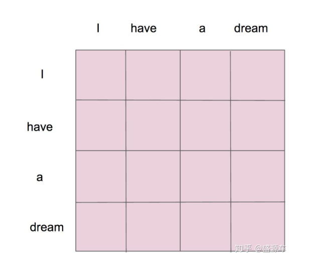
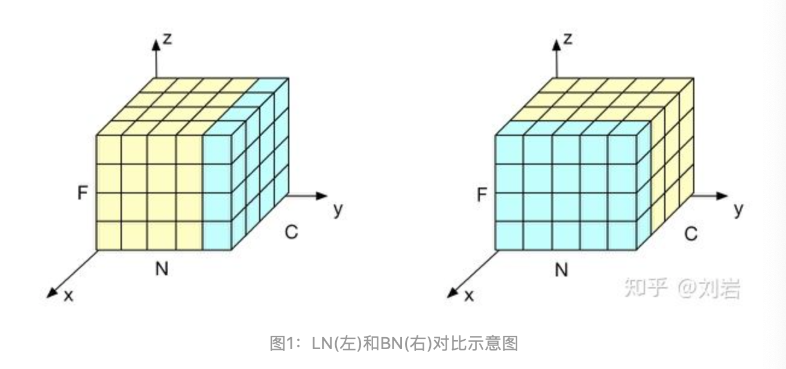

Transformer
简述 Transformer 提出的背景。 > 1. seq2seq 处理长期依赖仍然是一个挑战。 > 2. seq2seq 模型架构的顺序特性阻止了并行化。
什么是self-attention机制？ 请举例来说明。 > 参考 https://mp.weixin.qq.com/s/8Kic83oCoiKzAKe-dvRUvw > 1. 输入X, 通过3个线性转换把X转换为Q,K,V. 有了K,Q,V 三个特征向量，就可以做attention. > 2. 用每个单词的 query 向量与其自身及其他单词的 key 向量做dot product. 得到权重的分布表示。 假设有两个单词，Thinking, Machines. 通过嵌入变换会\(X_1\),\(X_2\)两个向量。分别与\(Wq\), \(W_k\),\(W_v\)三个矩阵想做点乘得到，{q1,q2},{k1,k2},{v1,v2} 6个向量。 然后{q1,k1} 做点乘得到得分\(score_1\), {q1,k2}做点乘得到\(score_2\)。对上述 socre 进行规范化，然后 softmax 得到权重 \([w_1,w_2]\). > 3. 对 valuex 向量求加权平均。用权重向量\([w_1,w_2]\) 乘以\([v1,v2]\)值得到一个加权后的值. \[Attention(Q,K,V) = softmax(\frac{Q,K^T}{\sqrt{d_k}})V\]

encoder 中的self-attention 与 decoder 中 masked self-attention 有什么区别？ > encoder 中，\(QK^T\) 会组成一个word2word的attention map. 是一个方阵. 比如说你的输入是一句话 "i have a dream" 总共4个单词， 这里就会形成一张4x4的注意力机制的图.

这里的masked就是要在做language modelling（或者像翻译）的时候，不给模型看到未来的信息。此时的 attention map 是一个下三角矩阵。

什么是 Multi-Head Attention？ > Multi-Head Attention就是把self-attention 做 N 次，然后把 N 个 heads concatenate 在一起。最后再做一个线性变换。

Batch Norm 和 Layer Norm 的区别是什么？ > BN并不适用于RNN等动态网络和batchsize较小的时候效果不好。Layer Normalization的提出有效的解决BN的这两个问题。LN和BN不同点是归一化的维度是互相垂直的. N表示样本轴，C 表示通道轴，F 是每个通道的特征数量。

什么是transformer 中的 Encoder-Decoder Attention？ > 在decoder中，Transformer block比编码器中多了个encoder-cecoder attention。在encoder-decoder attention中，Q 来自于 decoder 的上一个输出，K,V 来自于 encoder 的输出.
什么是Positional Encoding？ > 参考 https://zhuanlan.zhihu.com/p/95079337 > Transformer抛弃了RNN，而RNN最大的优点就是在时间序列上对数据的抽象，所以文章中作者提出两种Positional Encoding的方法，将encoding后的数据与embedding数据求和，加入了相对位置信息。
简述 Transformer 的架构。 > Transformer 包含 Encoder Part and Decoder Part. Encoder Part 比较重要的是 Self-Attention. Decoder Part 比较重要的是 Masked Multi-Head Attention，Encoder-Decoder Attention. 同时，encoder 和 decoder 都包含 Feed Forward, Residuals 以及 Layer Norm.

ELMo,OpenAI GPT,BERT
参考 https://zhangruochi.com/ELMo-OpenAI-GPT-BERT/2019/12/21/
解释下 ELMO 的思想. > ELMO 的意思是 embedding from language model. word2vec 最大的问题是在训练好后，词向量在任何context的情况下都是不变的。而实际上我们知道单词的意思随着语境的变化而变化。ELMO 训练了一个双向的 LSTM, 然后将 hidden layer concate 在一起。对于L层的双向lstm语言模型，每个单词一共有2L+1个表征（representations）.最后根据具体的任务，将2L+1个表征加权平均在一起。
解释下OpenAI Transformer. > OpenAI Pre-training a Transformer Decoder for Language Modeling.
Bert 是怎样实现 mask 的？ > - MLM：将完整句子中的部分字mask，预测该mask词 > - NSP：为每个训练前的例子选择句子 A 和 B 时，50% 的情况下 B 是真的在 A 后面的下一个句子， 50% 的情况下是来自语料库的随机句子，进行二分预测是否为真实下一句
在数据中随机mask15%的token，其中80%被换位[mask]，10%不变、10%随机替换其他单词，这样做的原因是什么？ >Bert随机mask语料中15%的token，然后预测masked token，那么masked token 位置输出的final hidden vectors喂给softmax网络即可得到maskedtoken的预测结果。这样操作存在一个问题，fine-tuning的时候没有[MASK]token，因此存在pre-training和fine-tuning之间的mismatch，为了解决这个问题，采用了下面的策略： > 1. 80%的时间中：将选中的词用[MASK]token来代替，例如 > my dog is hairy → my dog is [MASK] > 2. 10%的时间中：将选中的词用任意的词来进行代替，例如 > my dog is hairy → my dog is apple > 3. 10%的时间中：选中的词不发生变化，例如 > my dog is hairy → my dog is hairy
为什么BERT有3个嵌入层，它们都是如何实现的？ > - input_id是语义表达，和传统的w2v一样，方法也一样的lookup > - segment_id是辅助BERT区别句子对中的两个句子的向量表示，从[1,embedding_size]里面lookup > - position_id是为了获取文本天生的有序信息，否则就和传统词袋模型一样了，从[511,embedding_size]里面lookup
Bert的损失函数？ > 1. MLM:在 encoder 的输出上添加一个分类层,用嵌入矩阵乘以输出向量，将其转换为词汇的维度,用 softmax 计算mask中每个单词的概率 > 2. NSP:用一个简单的分类层将 [CLS] 标记的输出变换为 2×1 形状的向量,用 softmax 计算 IsNextSequence 的概率 > 3. MLM+NSP即为最后的损失
elmo、GPT、bert三者之间有什么区别？ > 1. 特征提取器：elmo采用LSTM进行提取，GPT和bert则采用Transformer进行提取。很多任务表明Transformer特征提取能力强于LSTM，elmo采用1层静态向量+2层LSTM，多层提取能力有限，而GPT和bert中的Transformer可采用多层，并行计算能力强。 > 2. 单/双向语言模型：GPT采用单向语言模型，elmo和bert采用双向语言模型。但是elmo实际上是两个单向语言模型（方向相反）的拼接，这种融合特征的能力比bert一体化融合特征方式弱。 > 3. GPT和bert都采用Transformer，Transformer是encoder-decoder结构，GPT的单向语言模型采用decoder部分，decoder的部分见到的都是不完整的句子；bert的双向语言模型则采用encoder部分，采用了完整句子